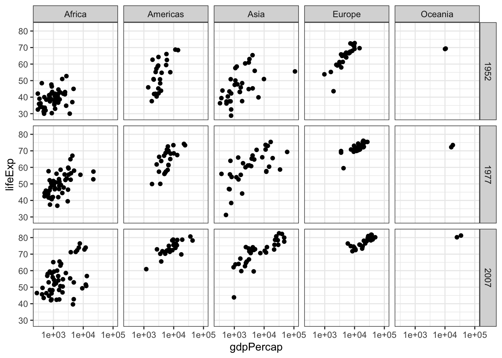
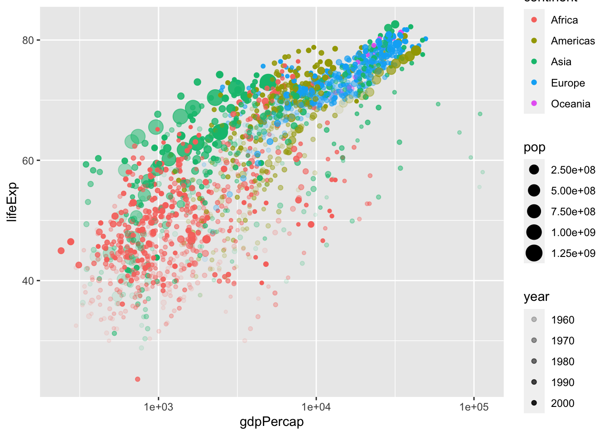
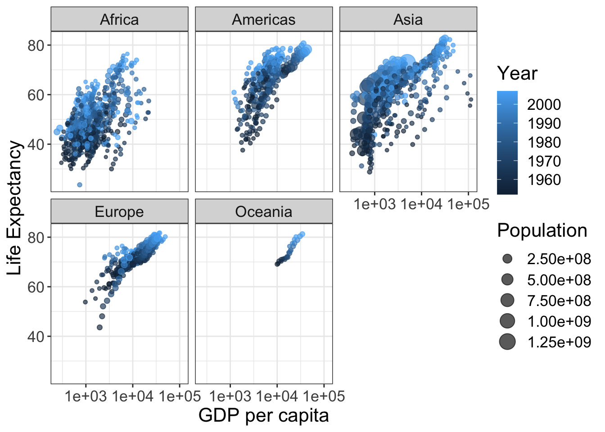
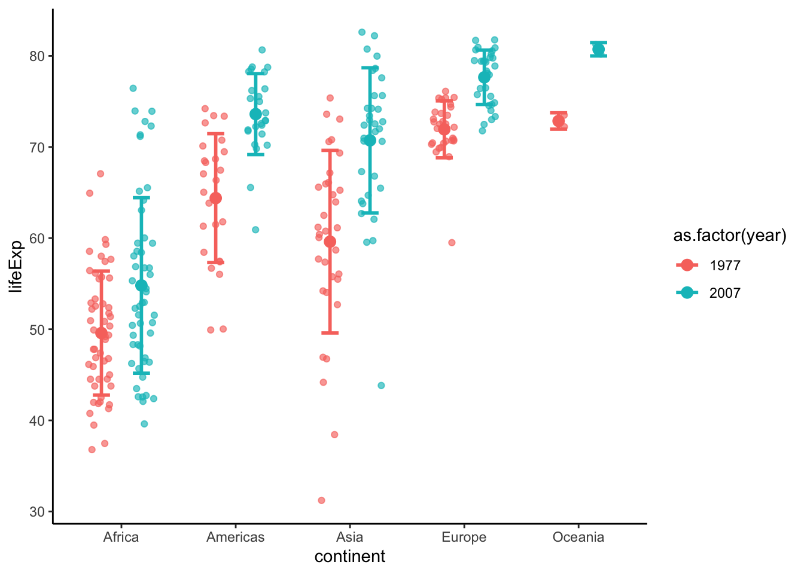
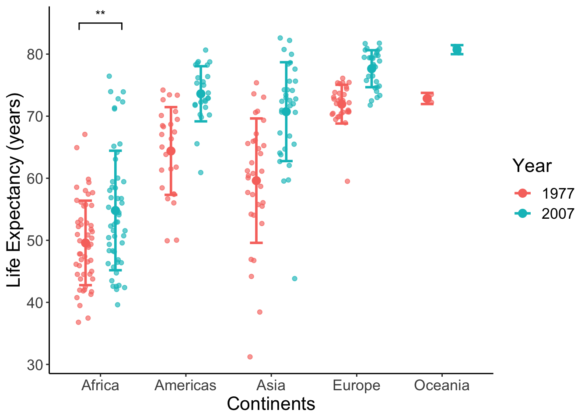
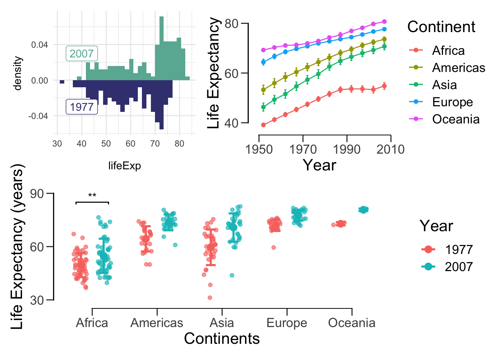

8 Data visualization
“The simple graph has brought more information to the data analyst’s mind than any other device.” – John Tukey
This lab is all about preparing publication-ready figures with ggplot2 and related packages. ggplot2 uses elegant syntax and it implements “The Layered Grammar of Graphics”.
Before we begin, let’s review a few key points for good figures:
Be clear and avoid confusion. Presenting too much information often results in messy figures. Figures inconsistent in colour, symbols, etc. can easily confuse readers.
Only use additional aesthetic effects when necessary. Everything in a graph has a purpose. The primary objective of a figure is to inform, not to look fancy (though this is a plus). When in doubt, stick to black, white, and grey.
Only use texts when necessary. Make text large. Never use Comic Sans as your font. Sans serif fonts such as Arial and Calibri are usually good bets.
Key point: the plot depends on the variables. Some plots are more appropriate for visualization than others. You have an obligation to display data responsibly. Check out The R Graph Gallery for a “dictionary” on different visualizations and the code to create them.
Recall that the tidyverse contains ggplot2 and dplyr among other packages. We’ll also load gapminder.
Hopefully by now you have a good idea of what the gapminder dataset looks like. Here’s a quick refresher:
## # A tibble: 6 x 6
## country continent year lifeExp pop gdpPercap
## <fct> <fct> <int> <dbl> <int> <dbl>
## 1 Afghanistan Asia 1952 28.8 8425333 779.
## 2 Afghanistan Asia 1957 30.3 9240934 821.
## 3 Afghanistan Asia 1962 32.0 10267083 853.
## 4 Afghanistan Asia 1967 34.0 11537966 836.
## 5 Afghanistan Asia 1972 36.1 13079460 740.
## 6 Afghanistan Asia 1977 38.4 14880372 786.8.1 A graphing template
Although we’ve presented graphs with ggplot2 in previous labs, let’s delve into the specifics of the syntax:
Everything in the initial ggplot() function is passed into the subsequent functions (i.e., GEOM_FUNCTION()). When calling ggplot(), you don’t explicitly need to write <ARGUMENT> = (ex: data = gapminder, x = lifeExp) as long as you have the variables in the correct order – just be careful you don’t mix up x and y!
ggplot2 works in a layer-by-layer manner. Take a look at this:


Here, the first line initializes the object and the second line adds a layer of scatter points. Unlike plotting in base R, you don’t need to specify variables using the $ operator – ggplot2 is smart enough to call it automatically for you.
I’d like to bring your attention to the + operator. This is how you add layers to the ggplot. Use + liberally to reduce excessively long lines; breaking long commands at appropriate places makes your code much more readable.
8.2 Scatter plot
Use the scatter plot when you want to see the relationship between two continuous variables.

You also can save the object as a variable. To show the figure, use the show() function or simply call the object by its name.
This data might benefit using a log scale. You can either log-transform (log(gdpPercap)) or simply draw the x axis in log scale (scale_x_log10()).

8.2.1 Trend lines
It seems that there exists a positive correlation between the two variables – you might want to add a trend line. Remember, p is the object of scatter plot with x in log. We can just build from here. This just goes to show the beauty of layered graphical syntax.
## `geom_smooth()` using method = 'gam' and formula 'y ~ s(x, bs = "cs")'
You find that R used ‘gam’ model as default. ‘gam’ is the generalized additive model. Without going into the mathematical details, you would expect a curve from gam.
What if I want a straight line (i.e., linear regression)? I would want a straight line to start with. Let’s start with a linear model (lm).
## `geom_smooth()` using formula 'y ~ x'
We can also create a generalized linear model (glm). glm can be useful if your variables are not normally distributed.
## `geom_smooth()` using formula 'y ~ x'
It appears thatlm and glm don’t look too different.
Notice that lm has a little shaded region around it. This correspondends to the confidence interval of 1 standard error. To get rid of it, specify se = FALSE. While we’re at it, let’s change the colour of the line to red and decrease its thickness. Let’s also remove that pesky grey background:
scatter_trend <- p + theme_classic() + # removes grey background
geom_smooth(method = 'lm',
se = F, # remove confidence band
col = 'red', # change colour of line to red (hex colours also work: #FF0000)
size = 0.75) # set width of line
show(scatter_trend)## `geom_smooth()` using formula 'y ~ x'
8.2.2 Facets
If you were paying careful attention, you may have noticed that we were using data from multiple years. However, this results in a messy, and potentially misleading, graph. Let’s fix this by plotting each year separately with the facet feature.
ggplot(data = gapminder, aes(x = gdpPercap, y = lifeExp)) +
facet_wrap(vars(year), nrow = 3, ncol = 4) +
geom_point(size = 0.5) +
scale_x_log10() +
theme_bw() # another ggplot2 theme
We can use faceting to split by the combination of two variables. Here I will use facet_grid to put the same values of splitting variables on the same row/column. Note that you also need to specify vars(year) and vars(continent) instead of just year and continent. This is simply to help ggplot retrieve the levels in a particular column.
gap.52.77.07 <- gapminder %>% filter(year %in% c(1952, 1977, 2007))
ggplot(data = gap.52.77.07, aes(x = gdpPercap, y = lifeExp)) +
facet_grid(rows = vars(year), cols = vars(continent)) +
geom_point() +
scale_x_log10() +
theme_bw()
8.3 Aesthetic mappings
A scatter plot places dots using x and y coordinates. What if we want to show more detail, like which point(s) correspond to a particular group? For example, what if we want to see how life expectancy vs GDP per capita varies per continent in 1977?
gap.77 <- gapminder %>% filter(year == 1977)
ggplot(data = gap.77, aes(x = gdpPercap, y = lifeExp)) +
geom_point(aes(color=continent)) +
scale_x_log10()
You can see the points from some continents, like Europe and Africa, cluster at distinct positions.
In addition to adding colours to show (categorical or continuous) groupings, we can also use
- Shape of points (categorical),
- Size of points (continuous), or
- Transparency/alpha of the points (continuous).
These options are all specified within aesthetic mappings (aes()). That is, aes() is the place you specify how you present your variables. More specifically, it’s how you map your variables to various aesthetics. To repeat an earlier point, aes() within the ggplot() function applies to ALL layers, while those in other layers only applies to that specific layer.
Here’s another example. Be careful with this as R interprets year as a continuous variable. Use as.factor() or factor() to circumvent this issue,
ggplot(data = gap.52.77.07, aes(x = gdpPercap, y = lifeExp)) +
geom_point(aes(col = as.factor(year))) +
scale_x_log10()
Going back to our original example of lifeExp vs gdpPercap by continent, I use stat_elipse() to enclose the points within a 95% confidence interval.
ggplot(data = subset(gapminder, year == 1977),
aes(x = gdpPercap, y = lifeExp)) +
# color only applies to the points, not the eclipses
geom_point(aes(color=continent)) +
# stat_ellipse uses level=0.95 by default
stat_ellipse() +
scale_x_log10()
We can also create multiple ellipses to group things together. Note that color = continent is the same as colour = continent and col = continent.
ggplot(data = subset(gapminder, year == 1977),
aes(x = gdpPercap, y = lifeExp, color = continent)) +
# color applies to both points and eclipses
geom_point() +
stat_ellipse() +
scale_x_log10()## Too few points to calculate an ellipse## Warning: Removed 1 row(s) containing missing values (geom_path).
What if we want to also visualize population size in addition to grouping by continent?
ggplot(data = subset(gapminder, year == 1977), aes(x = gdpPercap, y = lifeExp)) +
geom_point(aes(color=continent, size=pop)) +
scale_x_log10()
Here we run into a minor problem: some dots are overlapping. We can fix this by applying geom_jitter() with partial transparency.
ggplot(data = subset(gapminder, year == 1977), aes(x = gdpPercap, y = lifeExp)) +
geom_jitter(alpha=0.7, aes(color=continent, size=pop)) +
scale_x_log10()
Notice that geom_jitter() adds some random variation, or jitter, to each point. While this is a handy method to address overplotting, don’t rely on it too heavily. This is illustrated in the next plot:
ggplot(data = gapminder, aes(x = gdpPercap, y = lifeExp)) +
geom_jitter(aes(color=continent, size=pop, alpha=year)) +
scale_x_log10()
As you can see, this is a fancy figure, but also a messy figure. This plot has “information overload,” so we would like to simplify it. To reduce the amount of information, we come back to facets. Be careful with this one as R interprets year as a continuous variable. Use as.factor() or factor() to circumvent this issue,
ggplot(data = gapminder, aes(x = gdpPercap, y = lifeExp)) +
geom_jitter(alpha=0.65, aes(size=pop, color=as.factor(year))) +
facet_wrap(vars(continent)) +
scale_x_log10()
Finally, we can change the labels and text formats. Here, we can save the figure to a .png format. Alternatively, you can save the figure using the Export tab in the Plots viewing panel in RStudio.
p <- ggplot(data = gapminder, aes(x = gdpPercap, y = lifeExp)) +
geom_jitter(alpha=0.65, aes(size=pop, color=year)) +
facet_wrap(vars(continent)) +
scale_x_log10() +
labs(x = "GDP per capita", y = "Life Expectancy", size = "Population", color = "Year") +
theme_bw() + # remove the gray background
theme(text = element_text(size = 16)) # make texts larger
show(p)
## Saving 7 x 5 in image8.4 Line plot
A line plot is another way to visualize continuous variables. This is particularly useful when
- Your observations change over time and
- You want to demonstrate a causal relationship.
Let’s elaborate on the second point. In the previous case for life expectancy and GDP, we could only observe a correlation, but cannot conclude a causal relationship. In some case, such as carrying out a laboratory experiment or a simulation study, you can precisely manipulate certain independent variables and measure other dependent variables. This way you can argue for a better causal relationship. For example, you can change the concentration of a drug treatment and measure the inhibition effect.
Let’s take a look at the life expectancy of Africa over the years. Let’s first create a scatter plot.

Since the points can correspond to the countries, we can connect them with lines.
ggplot(data = subset(gapminder, continent == "Europe"),
aes(x = year, y = lifeExp, colour = country)) +
geom_point() +
geom_line(aes(group = country))
Here the group = country specifies that points with the same values for the variable country should be connected in a line.
Oftentimes you want to show line plots with mean values and error bars. Unfortunately, ggplot2 can’t automatically draw error bars – you have to explicitly specify the values. We’re going to address this in the next example.
First, calculate the mean and SEM and save it to a new data frame.
df <- gapminder %>%
group_by(year, continent) %>%
summarise(mean_le = mean(lifeExp), sd=sd(lifeExp), sem = sd(lifeExp)/sqrt(n()))## `summarise()` regrouping output by 'year' (override with `.groups` argument)Next, draw a line plot with this data frame. To draw error bars, we need to specify the upper and lower limits within geom_errorbar().
lineplot <- ggplot(data = df, aes(x = year, y = mean_le, color = continent)) +
geom_line() +
geom_point() +
geom_errorbar(aes(ymin = mean_le-sem, ymax = mean_le+sem),
position = position_dodge(0.05)) # position_dodge() sets length of error bar caps
show(lineplot)
Finally, let’s format the figure nicely.
lineplot <- lineplot + labs(x = "Year", y = "Life Expectancy", color = "Continent") +
theme_classic() + # remove the gray background
theme(text = element_text(size = 16)) # set font size
show(lineplot)
For a cleaner view with offset axis:
lineplot <- lineplot +
theme(axis.line = element_blank(), # hide the default axes
axis.ticks.length = unit(7, 'pt')) +
# specify the breaks of y-axis
scale_y_continuous(breaks=seq(40,80,20), limits=c(35,85), expand=c(0,0)) +
# specify the breaks of x-axis
scale_x_continuous(breaks=seq(1950, 2010, 20), limits=c(1945,2010), expand=c(0,0)) +
# specify the location of the new y-axis
geom_segment(y=40, yend=80, x=1945, xend=1945, lwd=0.5, colour="black", lineend="square") +
# specify the location of the new x-axis
geom_segment(y=35, yend=35, x=1950, xend=2010, lwd=0.5, colour="black", lineend="square")
show(lineplot)
## Saving 7 x 5 in image8.5 Bar plot
8.5.1 Basics
Let’s look at the life expectancy of all continents in 1977 using a bar plot. Notice that instead of using dplyr, we can simply use the base R subset() function. Recall df from the previous section.

Note by default, geom_col takes both x and y while geom_bar takes only x and plots the count on y. Just as before, we can add error bars:
ggplot(data = subset(df, year == 1977), aes(x=continent, y=mean_le)) +
geom_col() +
geom_errorbar(aes(ymin = mean_le - sem, ymax = mean_le + sem), width=0.5,
position=position_dodge(0.05))
We can compare 1977 and 2007 by settingfill = as.factor(year).
p <- ggplot(data = subset(df, year %in% c(1977, 2007)),
aes(x=continent, y=mean_le, fill = as.factor(year))) +
geom_col(position = position_dodge(), color = "black") +
geom_errorbar(aes(ymin = mean_le - sem, ymax = mean_le + sem), width=0.5,
position=position_dodge(0.9))
show(p)
Finally, let’s make this figure publication-ready:
p <- p +
scale_fill_manual(values = c('black', 'white')) +
labs(x = 'Continent', y='Mean life expectancy (years)', fill = 'Year') +
theme_classic() +
theme(text = element_text(size=16)) +
# removes space between bottom of bars and x-axis
scale_y_continuous(expand = c(0, 0))
p
8.5.2 Plotting significance (OPTIONAL)
Next we can run some statistical tests and add significance stars (*) to the plot. We’ll compare if the life expectancy in Africa in 1977 and 2007 has changed.
africa.1977.lifeExp <- gapminder %>% filter(continent == 'Africa', year == 1977) %>% select(lifeExp)
africa.2007.lifeExp <- gapminder %>% filter(continent == 'Africa', year == 2007) %>% select(lifeExp)
t.test(africa.1977.lifeExp, africa.2007.lifeExp)##
## Welch Two Sample t-test
##
## data: africa.1977.lifeExp and africa.2007.lifeExp
## t = -3.195, df = 91.787, p-value = 0.001917
## alternative hypothesis: true difference in means is not equal to 0
## 95 percent confidence interval:
## -8.474086 -1.977145
## sample estimates:
## mean of x mean of y
## 49.58042 54.80604The p-value is 0.001917. Here are common ranges for different p-values: 0 **** 0.0001 *** 0.001 ** 0.01 * 0.05 ns 1. We should use ** in this case. To draw the significance stars, we need the ggsignif package.
# install.packages("ggsignif")
library(ggsignif)
meanLE.77.07 <- p + geom_signif(y_position = 60, xmin = 0.75, xmax = 1.25, # position of the stars
annotations = "**", tip_length = 0.05)
meanLE.77.07
There are more ways to draw the significant stars in R. For example, ggpubr even allows you to run the tests and plot the stars in the same line.
However, I do not encourage you to do so. Manually adding the stars might be a bit tedious (in terms of adjusting the positions and tip length), but you are not as restricted by the package in terms of the tests you can do.
8.6 Box plot
Box plots are extremely versatile. Here are 2 reasons:
- You don’t need to calculate the mean and error for box plots (remember we used
dffor bar plots). - Many high-profile journals ask authors to submit graphs that shows not only the statistical description (mean and error), but also the dots for the raw data. Box plots are well suited for this purpose.
p <- ggplot(data = subset(gapminder, year %in% c(1977, 2007)),
aes(x = continent, y = lifeExp, color = as.factor(year))) +
geom_boxplot(position = position_dodge(0.8))
show(p)
Let’s add the data points. Here I use geom_jitter to avoid overlapping. Please note that position_jitterdodge introduces random noise to the x position of the points to make it easier to read. But since we are plotting against a categorical variable, the exact x position doesn’t matter.
Use stat_summary show data points and statistics together.
p <- ggplot(data = subset(gapminder, year %in% c(1977, 2007)),
aes(x = continent, y = lifeExp, color = as.factor(year))) +
geom_point(position = position_jitterdodge(0.4), alpha = 0.65) +
theme_classic() +
# adds error bar
stat_summary(fun.data=mean_sdl, fun.args = list(mult=1),
geom="errorbar", width=0.3, position = position_dodge(0.7), size = 1) +
# adds mean pooint to the error bar
stat_summary(fun=mean, geom="point", position = position_dodge(0.7), size = 3)
show(p)
Add asterisks and format the plot.
p <- p +
geom_signif(y_position = 85, xmin = 0.75, xmax = 1.25, annotations = "**", tip_length = 0.02, color = "black") +
labs(x = "Continents", y = "Life Expectancy (years)", color = "Year") +
theme(text = element_text(size = 16)) # make text larger
show(p)
We can again offset the axes.
offset_box <- p +
theme(axis.line = element_blank(), # hide the default axes
axis.ticks.length = unit(7, 'pt')) +
# Specify the breaks of y-axis
scale_y_continuous(breaks=seq(30,90,30), limits=c(25,95), expand=c(0,0)) +
# Specify location of x-axis
geom_segment(y=30, yend=90, x=0.4, xend=0.4, lwd=0.5, colour="black", lineend="square") +
# Specify location of y-axis
geom_segment(y=25, yend=25, x=1, xend=5, lwd=0.5, colour="black", lineend="square")
show(offset_box)
Now we can save this publication-ready figure.
## Saving 7 x 5 in image8.7 Histogram and density plot
Since these have been covered extensively in previous labs, I’m going to go through this section rather quickly. The histogram and density plot are great tools for looking at distributions of a single variable:
## `stat_bin()` using `bins = 30`. Pick better value with `binwidth`.

We can also use these plots to compare distributions.
ggplot() +
# 2007 data and label
geom_density(data = subset(gapminder, year == 2007),
aes(x = lifeExp, y = ..density..), fill = '#69B3A2') +
geom_label(aes(x=40, y=0.03, label='2007'), colour = '#69B3A2') +
# 1977 data and label
geom_density(data = subset(gapminder, year == 1977),
aes(x = lifeExp, y = -..density..), fill = '#404080') +
geom_label(aes(x=40, y=-0.03, label='1977'), colour = '#404080') +
theme_minimal()
Perhaps a histogram would be better for our purposes.
hist.07.77 <- ggplot() +
# 2007 data and label
geom_histogram(data = subset(gapminder, year == 2007),
aes(x = lifeExp, y = ..density..), fill = '#69B3A2') +
geom_label(aes(x=40, y=0.03, label='2007'), colour = '#69B3A2') +
# 1977 data and label
geom_histogram(data = subset(gapminder, year == 1977),
aes(x = lifeExp, y = -..density..), fill = '#404080') +
geom_label(aes(x=40, y=-0.03, label='1977'), colour = '#404080') +
theme_minimal()
hist.07.77## `stat_bin()` using `bins = 30`. Pick better value with `binwidth`.
## `stat_bin()` using `bins = 30`. Pick better value with `binwidth`.
8.8 Assembly of multiple figures (OPTIONAL)
Many figures in academic journals include multiple subfigures within a figure.
To assemble many graphs into one figure, usually we use a graphical design software such as Illustrator, Inkscape or even PowerPoint.
If you are able to generate all subfigures within one single R script (so that all the ggplot2 objects are present together), you could go on to use R package patchwork to assemble them into a big figure.
(Please note that this could be a very rare scenario when conducting serious research - Each subfigures may require intense computation and modelling work that are performed with several scripts. They may even come from different people - your teammates and collaborators. You don’t always have access to all te subfigures within one workspace. Most of the time you would still find yourself using graphical design softwares to assemble the figures.)
Here is a super simple example: just add the plots together! Recall that these variables were saved throughout our lab.
## `stat_bin()` using `bins = 30`. Pick better value with `binwidth`.
## `stat_bin()` using `bins = 30`. Pick better value with `binwidth`.
We can also do something a bit more complicated:
## `stat_bin()` using `bins = 30`. Pick better value with `binwidth`.
## `stat_bin()` using `bins = 30`. Pick better value with `binwidth`.
We can also add spacing between plots:
patch <- (hist.07.77 + plot_spacer() + lineplot) /
(meanLE.77.07 + theme(text=element_text(size=12)))
patch## `stat_bin()` using `bins = 30`. Pick better value with `binwidth`.
## `stat_bin()` using `bins = 30`. Pick better value with `binwidth`.
Most figures in papers are annotated. We can do the same: ‘1’ for Arabic numerals, ‘A’ for uppercase Latin letters, ‘a’ for lowercase Latin letters, ‘I’ for uppercase Roman numerals, and ‘i’ for lowercase Roman numerals. Note here that the sizing
(hist.07.77 + lineplot) / (meanLE.77.07 + theme(text=element_text(size=12))) +
plot_annotation(tag_levels = 'A')## `stat_bin()` using `bins = 30`. Pick better value with `binwidth`.
## `stat_bin()` using `bins = 30`. Pick better value with `binwidth`.
More often than not, we want all of our figures to have the same dimensions. patchwork makes it easy for us to do so:
aligned_plots <- align_patches(lineplot, scatter_trend, meanLE.77.07, offset_box)
for (p in aligned_plots) {
plot(p)
}That’s all there is to it! If you want more customization options, read the official documentation: https://patchwork.data-imaginist.com/articles/patchwork.html.
8.9 Extras (OPTIONAL)
8.9.1 Choropleth
“The greatest value of a picture is when it forces us to notice what we never expected to see.” –John Tukey
The choropleth is used to display differences in geographical regions using different colours/shades/patterns. To use map data, we need to install maps package.
First, let’s load maps and retrieve all of the data from the year 2007.
library(maps)
dat2007 <- gapminder %>% filter(year == 2007)
dat2007 <- dat2007 %>% rename('region' = 'country')Now let’s get the world map data. This is necessary because it contains the longitude and latitudes we need to draw the map
## long lat group order region subregion
## 1 -69.89912 12.45200 1 1 Aruba <NA>
## 2 -69.89571 12.42300 1 2 Aruba <NA>
## 3 -69.94219 12.43853 1 3 Aruba <NA>
## 4 -70.00415 12.50049 1 4 Aruba <NA>
## 5 -70.06612 12.54697 1 5 Aruba <NA>
## 6 -70.05088 12.59707 1 6 Aruba <NA>Whereas gapminder names USA and UK ‘United States’ and ‘United Kingdom’ respectively, world_map names them by their abbreviations. Let’s rename the gapminder data.
dat2007 <- dat2007 %>% mutate(region = fct_recode(region,
'USA' = 'United States',
'UK' = 'United Kingdom'))We’re almost there! Now, we need to merge the data.
## long lat group order region subregion continent year lifeExp pop
## 1 -69.89912 12.45200 1 1 Aruba <NA> <NA> NA NA NA
## 2 -69.89571 12.42300 1 2 Aruba <NA> <NA> NA NA NA
## 3 -69.94219 12.43853 1 3 Aruba <NA> <NA> NA NA NA
## 4 -70.00415 12.50049 1 4 Aruba <NA> <NA> NA NA NA
## 5 -70.06612 12.54697 1 5 Aruba <NA> <NA> NA NA NA
## 6 -70.05088 12.59707 1 6 Aruba <NA> <NA> NA NA NA
## gdpPercap
## 1 NA
## 2 NA
## 3 NA
## 4 NA
## 5 NA
## 6 NAFinally, we can plot the data. We specify group to draw each country individually.
# grey means no gapminder data
ggplot(life.exp.map, aes(x=long, y=lat, group = group)) +
geom_polygon(aes(fill = lifeExp), color = "white") +
scale_fill_viridis_b(option='D') +
theme_bw()
8.9.2 Animations
While we covered the most relevant data visualizations for your project, we’ve barely scratched the surface of what R can do. For example, you can create animations. Let’s install the gganimate package.
Next, load the package:
## Warning: package 'gganimate' was built under R version 3.6.2Finally, we can create the plot! This might take a while, but I promise it will be worth the wait!
ggplot(gapminder, aes(gdpPercap, lifeExp, size = pop, col = country)) +
geom_point(alpha = 0.7, show.legend = F) +
scale_colour_manual(values = country_colors) +
scale_x_log10() +
scale_size(range = c(2, 12)) +
facet_wrap(~continent) +
theme_bw() +
theme(panel.grid = element_blank()) +
# here is the animation code
labs(title = 'Year: {frame_time}', x = 'GDP per capita', y = 'Life expectancy (years)') +
transition_time(year) +
ease_aes('linear')
8.10 Additional resources
I highly recommend you read through these websites:
- From Data to Viz: https://www.data-to-viz.com
- Includes the visualization and the type of data it corresponds to.
- Patchwork: https://github.com/thomasp85/patchwork
- For creating multi-plot figures.
- Caveats: https://www.data-to-viz.com/caveats.html
- Pitfalls to avooid when creating figures.
- The Python Graph Gallery: https://python-graph-gallery.com
- If you’re more comfortable with Python. Includes the visualization and code to creat it.

Data visualizations for various data types. Check out https://www.data-to-viz.com/ for an interactive version of this chart!